Urubu-Preto
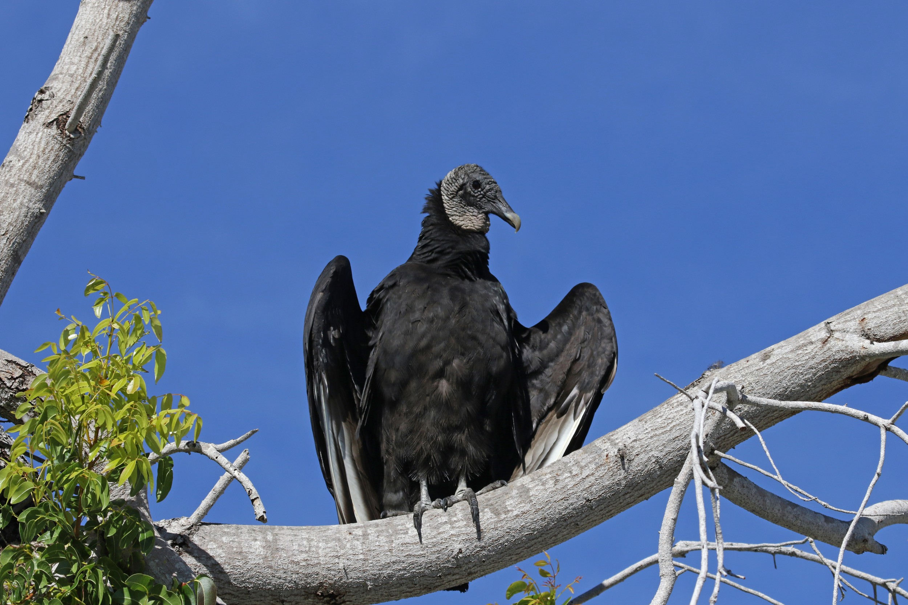
 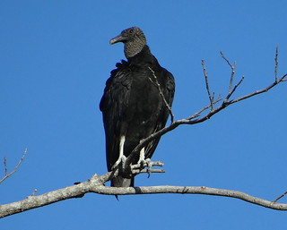
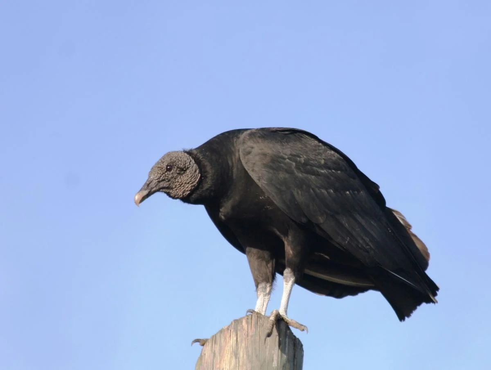
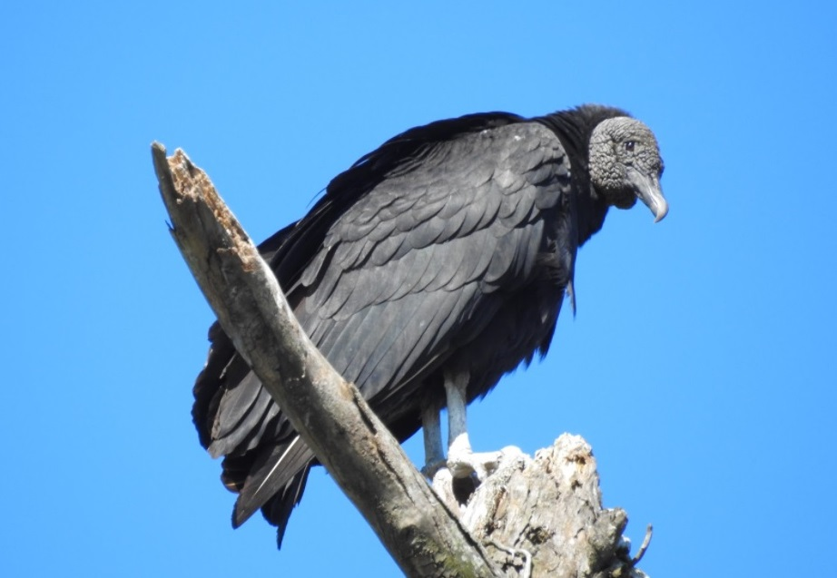
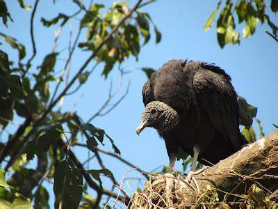
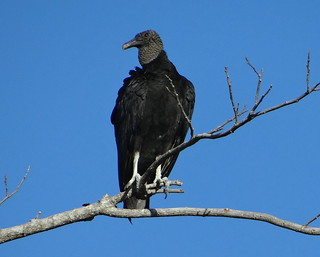
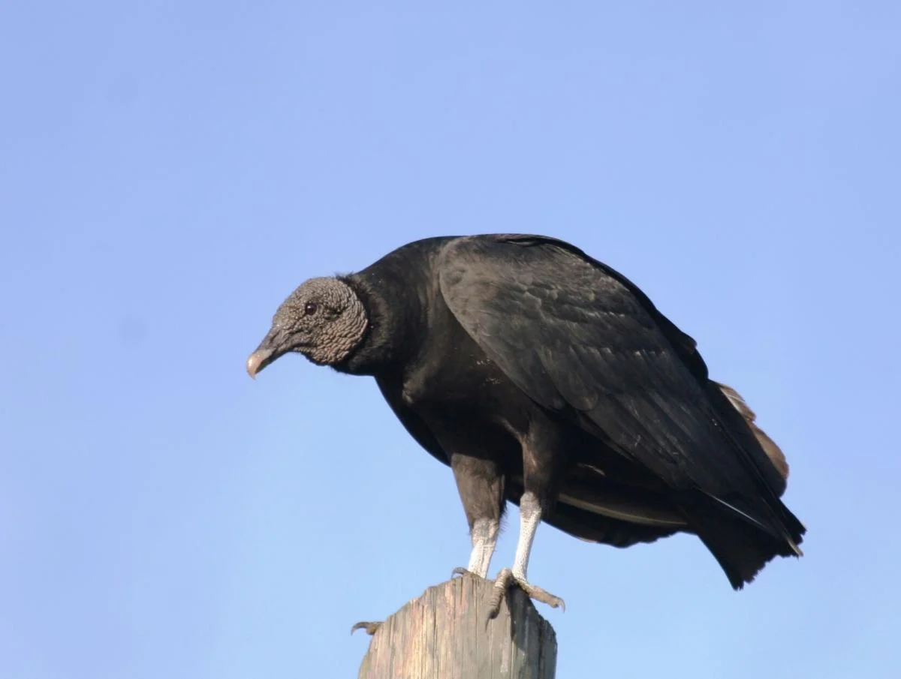
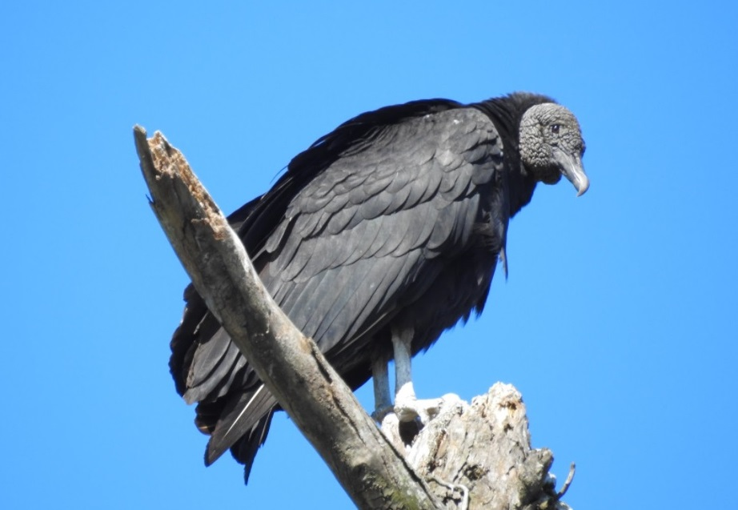
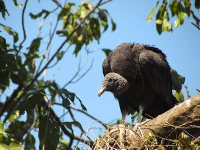
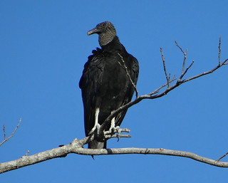
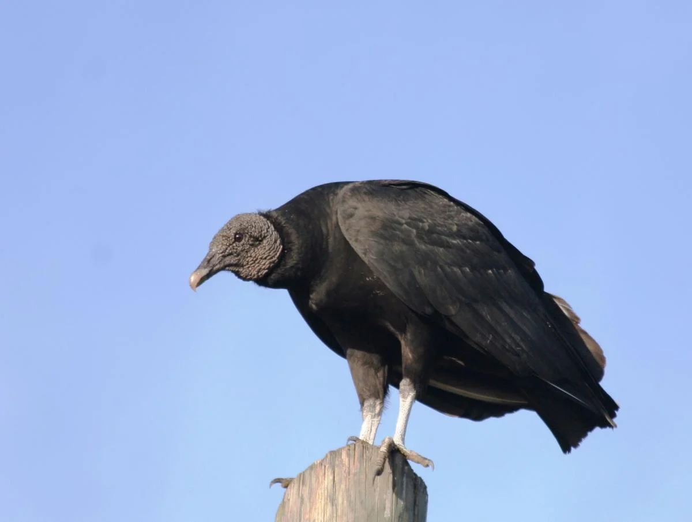
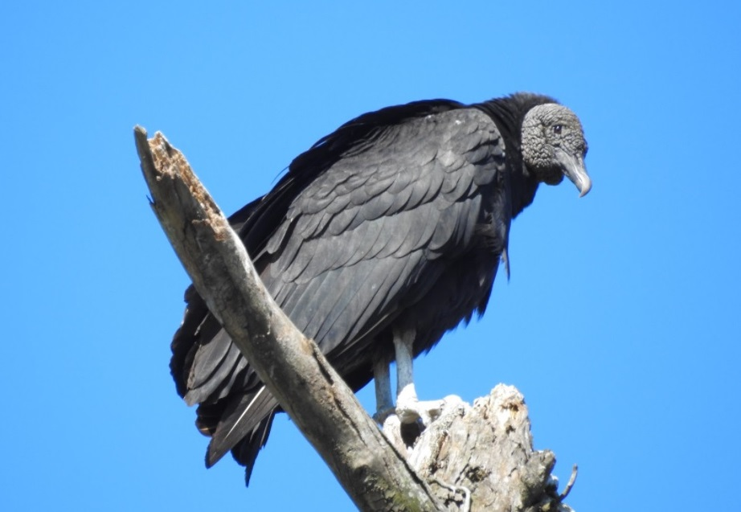
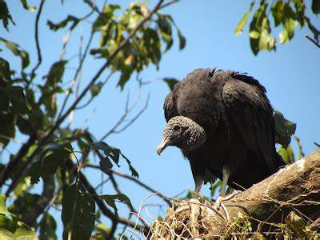
INFORMAÇÕES SOBRE O ANIMAL
- Nome Científico: Coragyps atratus
(Bechstein, 1793) - Nomes Populares: Urubu-de-cabeça-preta, apitã, urubu-preto ou urubu-comum
- Atualmente a espécie não está em perigo de extinção.
Classificação Biológica
- Dominio: Eukaryota
- Reino: Animalia
- Filo: Chordata
- Classe Aves
- Ordem: Cathartiformes
- Família: Cathartidae
- Espécie: C. atratus
Nutrição Geral
- Tipo de Nutrição: Heterotrófico.
- O urubu-preto é uma ave necrófaga, o que significa que se alimenta de carcaças de animais mortos. Essa dieta é importante para a natureza, pois ajuda a manter o equilíbrio ecológico, removendo os restos mortais que poderiam contaminar o ambiente. Além disso, em áreas habitadas por humanos, eles também se alimentam de matéria em decomposição em depósitos de lixo.
Morfologia
- Tamanho e envergadura: O urubu-preto mede entre 56 e 76 centímetros de comprimento, com uma envergadura de cerca de 143 centímetros. Os machos pesam em média 1,180 kg, enquanto as fêmeas chegam a 1,940 kg.
- Plumagem e Aparencia: Sua plumagem é totalmente negra, incluindo a pele nua da cabeça e do pescoço. Em voo, suas asas têm um formato mais curto e arredondado, com uma área mais clara quase em forma de círculo perto do final de cada asa.
Comportamento
- Comportamento de Voo: É frequentemente observado realizando voos planados em correntes térmicas a grandes alturas. Além disso, bate ativamente as asas, produzindo um som característico semelhante a um avião a jato.
- Localização de carniça:Ao contrário de outros urubus, o urubu-preto não possui um olfato apurado. Ele localiza carcaças visualmente, observando outros urubus pousando para se alimentar.
Comunicação: Durante o voo, os urubus-preto emitem sons característicos, semelhantes ao ruído de um avião a jato. Esses sons podem ser usados para comunicação entre os indivíduos.
Hábitos sociais: Eles frequentemente se reúnem em grupos, especialmente quando há uma grande quantidade de alimento disponível. Esses grupos são chamados de “comitivas”.
Limpeza ecológica: Sua principal função é limpar o ambiente, removendo carcaças de animais mortos. Isso ajuda a evitar a propagação de doenças e mantém o equilíbrio na natureza. Ocorrência
- O urubu-preto (Coragyps atratus) pode ser encontrado em ambientes abertos, habitando campos e meios urbanos. Sua distribuição abrange o sul dos Estados Unidos, América Central e quase toda a América do Sul, sendo muito comum em qualquer região do Brasil.
- Mapa de Ocorrência 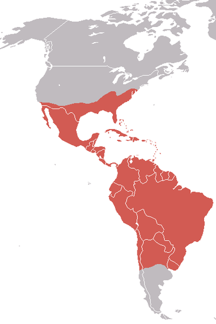
Reprodução
- O urubu-preto faz ninhos em ocos de árvores mortas, entre pedras e outros locais abrigados, geralmente com incidência de árvores. Ele põe 2 ovos branco-azulados, manchados com muitos pontos marrons. A incubação dos ovos é realizada por ambos os genitores durante 32 a 40 dias.